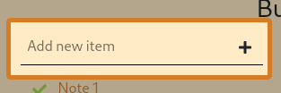
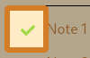
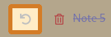
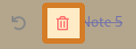

Todo List Demo
Built using
-
Add a Todo
-

Type in your task
-
Click '+' to add item to your list
-
Finished a Task?

Click on '' to mark the task as finished
-
Not sure if it's done?

You can move a finshed task to unfinshed simply by clicking '' icon next to a finished item
-
Deleting a task

When you wish to remove an item completely, click on the '' next to a finished note to permanently delete it